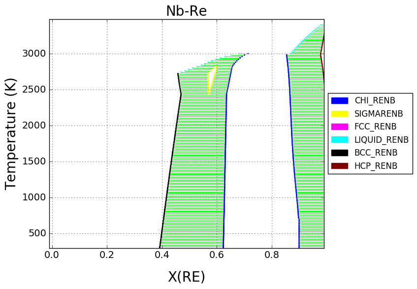

Plotting Isobaric Binary Phase Diagrams with binplot¶
These are a few examples of how to use Thermo-Calc TDB files to calculate isobaric binary phase diagrams.
Note that, at the time of writing, invariant reactions (three-phase ‘regions’ on binary diagrams) are not yet automatically detected so they are not drawn on the diagram.
Al-Zn (S. Mey, 1993)¶
The miscibility gap in the fcc phase is included in the Al-Zn diagram, shown below.
The format for specifying a range of a state variable is (start, stop, step).

Al-Fe (M.Seiersten et al., 1991)¶
Tielines can be removed by passing the tielines=False argument.
Al-Ni (N. Dupin et al., 2001)¶
Failed to converge: OrderedDict([('P', array(101325.0)), ('T', array(1610.0)), ('X_AL', array(0.50001))])
Failed to converge: OrderedDict([('P', array(101325.0)), ('T', array(1570.0)), ('X_AL', array(0.50001))])
Failed to converge: OrderedDict([('P', array(101325.0)), ('T', array(1320.0)), ('X_AL', array(0.50001))])
Failed to converge: OrderedDict([('P', array(101325.0)), ('T', array(1260.0)), ('X_AL', array(0.16001))])
Failed to converge: OrderedDict([('P', array(101325.0)), ('T', array(1270.0)), ('X_AL', array(0.16001))])
Failed to converge: OrderedDict([('P', array(101325.0)), ('T', array(1920.0)), ('X_AL', array(0.52001))])

Nb-Re (X. L. Liu et al., 2013)¶
Calculating Energy Surfaces of Binary Systems¶
It is very common in CALPHAD modeling to directly examine the Gibbs energy surface of all the constituent phases in a system.
Below we show how the Gibbs energy of all phases may be calculated as a function of composition at a given temperature (2800 K).
Note that the chi phase has additional, internal degrees of freedom which allow it to take on multiple states for a given overall composition. Only the low-energy states are relevant to calculating the equilibrium phase diagram.